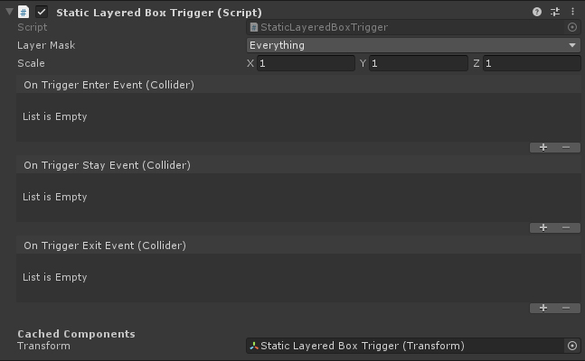
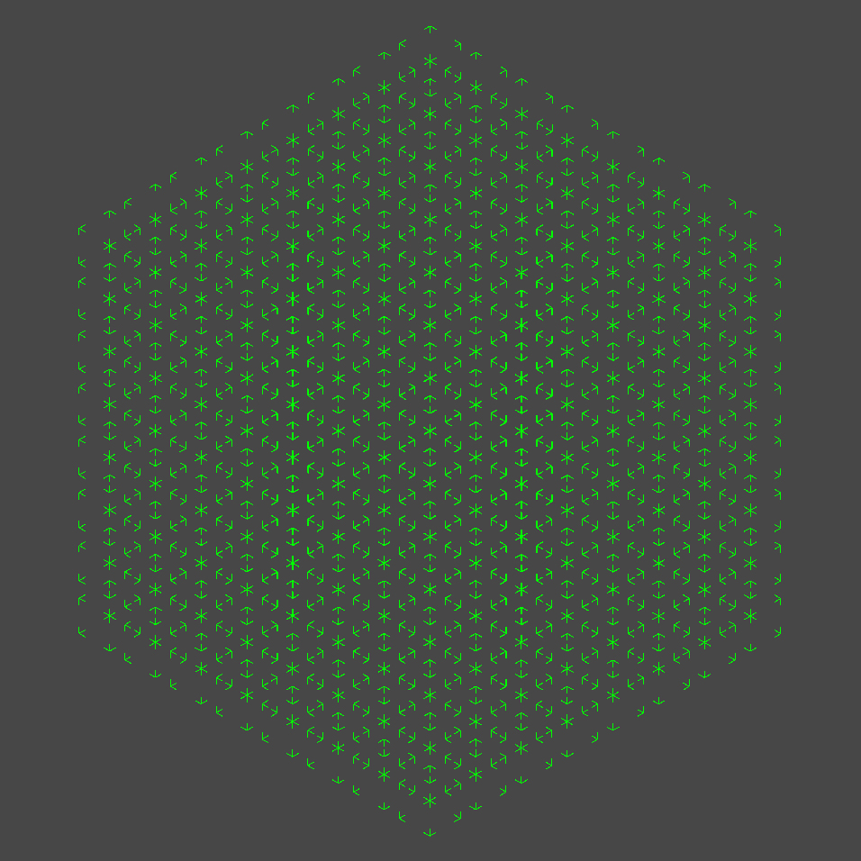
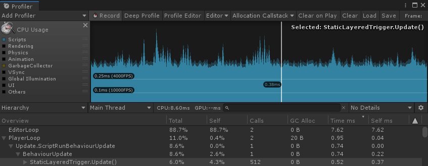
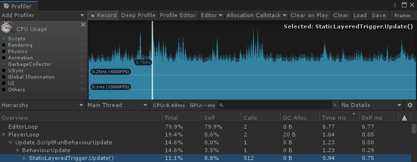
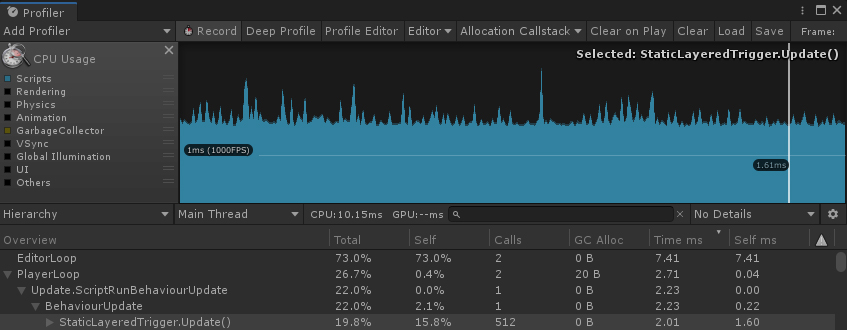
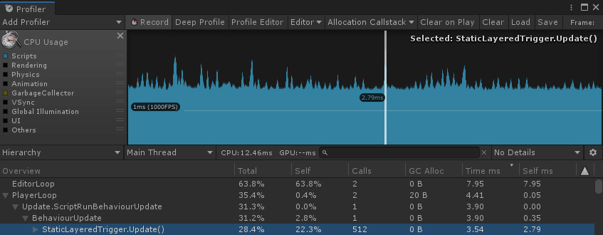

Sometimes in Unity I come across the need to perform triggers using colliders, but on a specific layer without having to change the collision matrix.
Because of this need, I created the Static Overlap Box Trigger, a trigger that allows me to configure to trigger with only the layers I want. As well as being able to capture Enter, Stay and Exit events in another game object.
Of course it doesn't have all the performance built-in colliders have, but it does meet my need very well, and it's relatively fast.

I like to cache transform, because besides gaining performance, I avoid "GetComponent" in my "Start".
The tests were performed on a i3-4160, 2 cores, 4 threads, 3.6 GHz.
For testing environment I put 512 Static Layered Box Trigger in my scene, forming an 8x8x8 matrix. If you look orthogonally it looks more like a fractal.

Valley without any active collision

GC Allocation: 0 bytes
Time (ms): 0.5200 (512 calls)
Time (ms): 0.0010 (001 calls)
Peak without any active collision

GC Allocation: 0 bytes
Time (ms): 0.9400 (512 calls)
Time (ms): 0.0018 (001 calls)
Valley with 4 active collisions each trigger (2048 active collisions)

GC Allocation: 0 bytes
Time (ms): 2.0100 (512 calls)
Time (ms): 0.0039 (001 calls)
Peak with 4 active collisions each trigger (2048 active collisions)

GC Allocation: 0 bytes
Time (ms): 3.5400 (512 calls)
Time (ms): 0.0069 (001 calls)